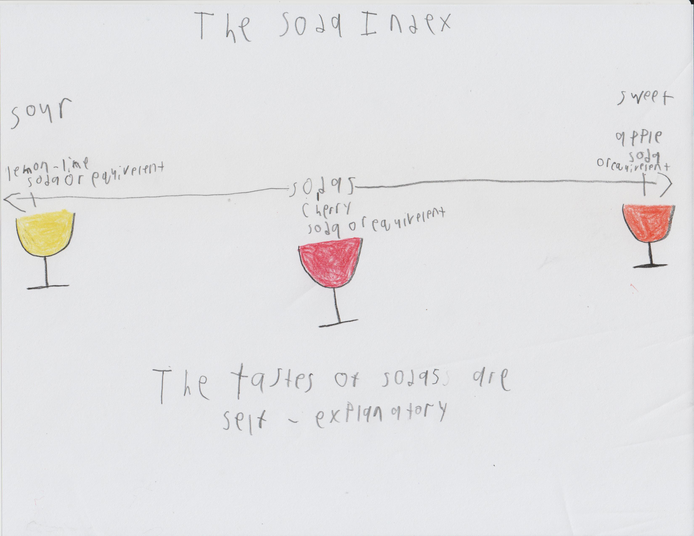

Sodas
This page is under the GNU GPL v3.0 and everything on this page that the GNU GPL v3.0 does not cover is under this license: This work is licensed under Attribution-ShareAlike 4.0 International.
Link to main page and repository
, Apple Soda or equivelent, The tastes of sodas are self-explanatory." width="600" height="400">
warning: This is only one dimension of the soda index, does not cover all dimesions of the soda index.
Recipes
F.Y.I. and warnings: Make sure to follow any local laws about distributing sodas made with ginger bug. Make sure that everything that touches your drinks or ingredients of drinks and tools are cleaned and sanitized. For anything that happens in soda making process or soda distribution process I am not responsible so MAKE AND DISTRIBUTE SODA AT YOUR OWN RISK.
Cherry Soda or equivelent
- 1 3/4 cups of water
- 1 cup of cherry juice or equivelent
- 1 tablespoon ginger bug
- Pour all ingredients in bottle
- Shake bottle
- Wait 2 days, after that its done
Apple Soda or equivelent
- 1 3/4 cups of water
- 1 cup of apple juice or equivelent
- 1 tablespoon ginger bug
- Pour all ingredients in bottle
- Shake bottle
- Wait 2 days, after that its done
Lemon-Lime Soda or equivelent
- 1 3/4 cups of water
- 1/2 cup of lemon juice or equivelent
- 1/2 cup of lime juice or equivelent
- 1 tablespoon ginger bug
- Pour all ingredients in bottle
- Shake bottle
- Wait 2 days, after that its done